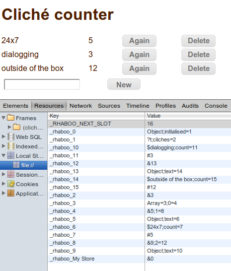

| Makes JavaScript objects persistent... |
| ...without learning a new API. |
| rhaboo |
| |
|
| about | docs | faq | github |
The easiest, fastest and most portable persistence solution on the web
|
Easy Makes regular JS objects persistent. |
Full Stores objects nested to any level. |
Fast Stores components of objects separately rather than just stringifying and parsing the whole thing at every little change. |
|
Portable Only relies on localStorage. |
Reliable Our automatically generated test script contains roughly 20,000 assertions. |
For instance:
<script src='rhaboo.min.js'></script> <script> //Open a persistent object called 'Some name'... var store = Rhaboo.persistent('Some name'); //If it has a property called 'count' then increment it, //otherwise initialise it to 1... store.write('count', store.count ? store.count+1 : 1); </script> <body onLoad=' document.getElementById("count"). //Use it like a normal object... innerHTML = store.count;'> <p>You loaded this page <span id='count'></span> times. </body>
So having made store with that "constructor", it behaves just like a normal object except that wherever you'd normally write store.key=val you should write store.write('key', val) instead. Furthermore, any objects or arrays inside a persistent one also have that write function:
store.write('somethingfancy', {
one: ['man', 'went'],
2: 'mow',
went: [ 2, { mow: ['a', 'meadow' ] }, {} ]
});
store.somethingfancy.went[1].mow.write(1, 'lawn');
That is quite literally all you need to know.
|
Download
rhaboo.min.js |
Free and Open Source.
 1YF83SfzgR8ZjjuMe9RdFvFkc78UFwEn9 1YF83SfzgR8ZjjuMe9RdFvFkc78UFwEn9
|
| install | demos | reference | internals | tests |
There are several options:
npm install rhaboothen write a script tag pointing at
node_modules/rhaboo/rhaboo.min.js
git clone https://github.com/adrianmay/rhaboo.git
cd rhaboo
npm install grunt grunt-contrib-uglify grunt-browserify seedrandom ajon parunpar
grunt # be patient with this
This web page uses rhaboo (around line 70) to remember where you were in the menus
You can run these in Firefox OS Simulator by installing the manifest (which is in rhaboo's root directory.)
Nuke localStorage
| API | Description | Parameters | Returns |
|---|---|---|---|
Rhaboo.persistent(name) |
Returns root persistent object. The library looks for entries in localStorage corresponding with the passed name and loads any previously persisted data into the returned object. If no data is found, a mostly empty object is returned, 'mostly' meaning that it just has a property called _rhaboo which is used for internal purposes. |
name: |
The persistent object. |
Object.prototype.write(key, val) |
Persistent replacement for = operator. store.write('key',val) is equivalent to store.key=val except with persistence. Can be applied to objects inside the root persistent as well as the root persistent itself.
|
this:key:thisval: |
this |
Object.prototype.erase(key) |
Persistent equivalent of delete object.key. Completely removes a property. This is not the same as setting it to undefined. Don't use it on arrays. Use splice instead. |
this:key:this |
this |
Warning: rhaboo uses semver, so a major version change WILL be a breaking change. Make sure you specify the major version you are coding against and use the latest within that range.
| Version (current = 3.0.1) | Changes |
|---|---|
| 2.0.5 | First anybody has heard of |
| 2.0.6 | Code cleanup: Remove where from _rhaboo |
| 2.0.7 | Dumped q and enq.js and just used setTimeout instead |
| 3.0.0 | Total rewrite aiming to restore constructors/prototypes and support multiple persistent refs to the same object. Huge speed boost. Breaks API. New features not tested yet, but old tests succeeding. |
| 3.0.1 | Little bug fixes |
| 3.1.0 | Support Date objects |
Each source file uses node.js-style modularisation: the important exports are written in something called module.exports which acquires a local name when required by another module. For instance, within core.js, the execute function is called execute, but because arr.js imports it as "R" it must be referred to as R.execute in that file.
Browsers don't have a require statement so the 'browserify' preprocessor is used to read them and output a source file combining all the modules. If you're using browserify, then arr.js is the thing to import.
It's not desirable to force people to use browserify, so there's also a source file called unbrowserify.js that uses browserify to import arr.js (which exports everything useful) and assigns it to a regular variable called Rhaboo. The final scripts rhaboo.max.js and rhaboo.min.js are based on unbrowserify.js. Functions that live in Object.prototype or Array.prototype are available without that unbrowserification.
Namespace pollution is restricted to names beginning with _rhaboo (except write() and erase()) and the Rhaboo object.
Rhaboo has 2 source files:
There are no other dependencies.
There's also a huge test script generator which depends on another repo by the same author called ajon. This is a more accurate but less readable version of JSON. Rhaboo itself does not use ajon, only the test script generator does.
Rhaboo does not perform localStorage operations directly, rather, it builds a script of all the localStorage operations required to persist a given change, and enqueues a single setTimeout job to perform the whole script. A script entry includes both the name of a localStorage function like setItem and the parameters to be passed to it as fully evaluated strings. Executing the script is thus a simple matter of applying each item in turn with localStorage as this. Browsing through the functions in rhaboo, one notices functions that take a script as a parameter and add entries to it, and those that declare an empty script, pass it to several such functions in turn, then execute the whole script.
This is documented in its own repo, but in a nutshell, it supports compact serialisation of known data in a known way. The core abstraction is a that of a parunpar: a function of boolean which returns an encoder or corresponding decoder in return for true or false respectively. An encoder takes a data structure (often a bunch of nested arrays) and returns a string, while the corresponding decoder takes that string and returns a data structure identical to the original one. There are combinators that build complex parunpars out of simple ones.
Rhaboo uses parunpar to define the linear encoding used in individual localStorage entries. These entries come in two types corresponding to objects and properties. Both types have a left hand side and may have a right hand side separated from the LHS by a semicolon. For objects, the LHS records the constructor and the length (if defined) for the object. For properties, the LHS comprises the type and a string representation of the value.
The RHS is the same in both cases: it implements a linked list of properties where the link contains both the name of the next property and the localStorage location where its type and value can be found, perhaps accompanied by a link to yet another property. The RHS of an object entry points to the first property entry, then subsequent properties are found by following the RHSs of properties already found. This peculiar habit of putting the property name in the link to it rather than its own entry has neither advantages nor disadvantages.
If a property is an object rather than a basic type, then its entry will be a reference (this being a sixth basic type in rhaboo after the three usual ones, null and undefined) to a localStorage location where the object itself is stored using an object entry.
Root persistent entries are just like any other object: the object is represented independently of any name or reference to it. The name passed to Rhaboo.persistent resolves to a localStorage entry in which a reference to the object is found, not the object itself. This extra level of indirection is necessary to support multiple persistent references to the same object.
Here's a peep into the localStorage usage of the cliches demo:
|  |
Key: _ : undefined ~ : null $ : string # : number ? : boolean & : reference |
At the top we see how localStorage keys are generated. There is no attempt to reuse freed numbers. At the bottom we see a reference to slot 0 (i.e. localStorage entry "_rhaboo_0") under a name derived from the parameter to Rhaboo.persistent. The referenced object is constructed with the Object function and has no meaningful length. Its first property is called 'initialised' and lives in slot 1 where we can see the type (? means boolean) and the value (t means true for booleans). The next property is called 'cliches' and lives in slot 2 where we see a reference to slot 3 in which an object constructed with 'Array' with a length of 3 can be found. It has a property called '0' which lives in slot 4 which contains yet another reference, etc, etc.
A persistent object needs to store some information in memory about how it is persisted. This is all in a property called _rhaboo in each persistent object.
The localStorage entries for the properties of a given object hang together in a singly linked list. This is adequate for restoration which occurs in one go at an early stage. However, for updates during run time, we'll often need the predecessor of a given property (e.g. when deleting it) and should therefore have a doubly linked list for decent performance. This doubly linked list is called 'kids' and is a property of _rhaboo. The main purpose of each item in the list is to store the localStorage slot for the property. Within the scope of a given object, there are functions to append a new kid (i.e. property name to slot number mapping) to the end of the list, and to remove the kid for a specified property name from the list.
_rhaboo itself has some similarities with the kids and is often treated as such. Specifically, while the members of a kid are called slotnum, next and prev, _rhaboo also has a slotnum navigating to the object slot, a pointer to the head of the kid list called next and to its tail called prev. Anything called prev or next has the value undefined if there is nothing meaningful for it to point at. Otherwise they take a string value which is the property name of what they point to. This property name is both the actual name of the property within the object, and the key within the kid list.
The per-entry aspect of restoration is performed by the parunpars. There's one for objects and another for properties. We always know which to apply to a given slot before examining the contents of that slot. For objects, the entry contains a string and maybe a number. When encoding, the string is obtained from the constructor (usually inherited from the prototype) and the number from the length property. When decoding, the global object is searched for a function named like the string and called with the number as a parameter.
For entries for properties of the 3 basic types, the encoder prepends a single-charater type code to a stringification of the value and the decoder uses the type character to choose a converter to apply to the stringification. For null and undefined types no stringification is required. For references, the thing to stringify is the slot number of the referred object. This is read out of _rhaboo during encoding, and during decoding the number is passed to restore which returns the newly restored object.
This restore function is where the recursion along RHS links through the properties is triggered. In the context of a partially restored object and a property slot, augment() inserts the property into the object, looks for another link and recurses into augment(). The restore() function does some object-specific basics like setting up an empty kids list and then starts the augment() recursion if there's a RHS in the object slot.
Another function of restore() is to keep a map of slot numbers onto restored objects. This is used to reuse already restored objects in the case of multiple references to them. This map is not needed after the initial restore.
When keeping the store up to date, the immediate user of the parunpar encoder is the updateSlot() function. This just gathers the information to be encoded in the form expected by the parunpar, encodes it and writes a script entry for its persistence. This function works for both property and object slots according to whether the prop parameter is defined or not.
Property and object slots get a slot allocated to them in different ways. For properties, the slotFor() function may be called more or less anytime. It does not return a value but ensures that the slot number is written in the containing object's kids list under the property name. This might already be true when slotFor() is called, but if not, a slot is grabbed, the kid is created and the preceeding slot is updated in localStorage. This is the slot that links the new one into the greater scheme of things. As for the new slot itself, some data is about to be written in the property after which it will be persisted, so there's no need to do so during slotFor().
Persistent objects are reference counted, as must be the case in a system supporting multiple references to the same object. A non-persistent (i.e. ordinary JS) object has no _rhaboo property and an implicit refcount of zero. We can call addRef() on such an object and it will acquire an _rhaboo with a kids list, a new slot and a refcount of 1. Subsequent addRef() calls just increase the refcount. The refcount can be decreased with release() and if it reaches zero, then all traces of its persistence will be obliterated and its _rhaboo deleted. Both addRef() and release() deal with all the properties, recursing into any object-valued ones. Both functions take some extra parameters used by the persistent array mutators as discussed later.
The write and erase functions should now be self explanatory. The latter looks a bit messy, doing things that one might think removeKid() should do, but removeKid() has no idea about scripts or persistence: it just administers the kid list structure. This is by design.
This is where the 7 array operations: push, pop, shift, unshift, splice, sort and reverse (plus maybe fill if it's available) are made persistent. The original functions are stashed and used by the new persistent ones.
In the worst case scenario that the array is totally rewritten, e.g. by a sort, our strategy is to use release() and addRef() in a rather forceful way. We note the refcount and slot number, then call release() with force=true which means obliterate the persistence irrespective of the refcount. Then we call the standard version of the mutator followed by addRef() with the saved values of the refcount and slot number, which are adopted by the object.
For push and pop we can do a lot better because we know that most of the array is unaffected. For popping, we unpersist the (length-1)th property and update the object slot to reflect the new length. There are odd cases where the kid for the popped property doesn't exist: make a populated array sparse by writing something way beyond the length, then sort it. The sparse entries (which do not contain null or undefined but simply don't exist) are sorted to the end and the (length-1)th doesn't exist. Rhaboo doesn't want to create kids for all these sparse entries so it just dodges the flames when an attempt is made to delete the non-existent kid in pop. For pushing, we note the old and new lengths and persist everyting in between, again, updating the object slot for the new length.
Seeing as this library is about persistence, the test script has to run over multiple pages.
The test system consists of a grunt task in generate-tests/tasks/gentest.js that writes a set of html pages, each accompanied by a JS file containing a test script. These end up in generate-tests/generated-pages. The test script is a JS object to be interpreted by the page with the help of generate-tests/runner.js.
Let's look at some script:
var page = 0;
var persistents = {
"P1000001": [
{
"action": "write",
"path": [
"P1000002"
],
"vehicle": "{<val>=[(5):<0>=(2);<1>=!;<2>=<blah>;<3>=[(3):<0>=(3);<1>=@;<2>=<ecky>;];<4>={<a>=<asdf>;<b>=@;};];}",
"expect": "{<P1000002>=[(5):<0>=(2);<1>=!;<2>=<blah>;<3>=[(3):<0>=(3);<1>=@;<2>=<ecky>;];<4>={<a>=<asdf>;<b>=@;};];}"
},
The hieroglyphics in vehicle and expect are a notation called ajon which is like JSON but more accurate and less readable.
The instruction is to open a root persistent called P1000001, write to its property called P1000002 a value of [2,false,'blah',[3, true, 'ecky' ],{ a:'asdf', b:true }] and then expect P1000001 to contain just that. After all, this is the first instruction in the whole test script and runner.js will erase localStorage before starting. There are more changes to P1000001 on this and subsequent pages so expect will often contain data left over from earlier actions. Actions are not always writes - they can also be array operations or kills( i.e. erasures.)
gentest.js works by making up a series of actions, applying them to normal objects in memory and writing the contents of those objects after each operation into the expect field. The runner works by repeating the same sequence over a number of pages and checking the results against the expect field. If persistence is working properly, the page breaks should have no effect.
The script, then, is a list of pages, each containing a list of root persistents, each containing a list of action-expect steps. But that's not how it gets designed. Rather, we start with a reasonably versatile list of 'stories' as to what a given property might experience. The model for that is three operations, each optionally followed by a page break, and each being either a kill or a write using a specified type. With 8 types (string or bool, number, empty object, populated object, empty array, populated array, undefined, null) that makes 9*2*9*2*9*2=5832 different stories including 2.5*5832=14580 page breaks. The first step of gentest.js is to calculate these stories and store them in a random order.
The next step is to hand the stories out to a range of root persistents and sub-objects thereof. We make variables for the current target persistent and target path within it, then step through the stories and 'episodes' of the stories, writing script steps that apply each episode to the current target (i.e. whatever is in the current persistent along the current path,) fill in values for the parameters of the write episodes, and bump the target around as we go along. That bumping around includes at each step a certain probability of: starting a whole new persistent, diving deeper into the current target if it is an object, popping up to the current target's parent, or skipping to a sibling. When reading that code, one should note that the current path doesn't need to point at something that exists because we're about to write it anyway, but the penultimate step in the path must point to an object (or array.)
This is a script that we can actually run on normal JS objects to get the expected values. But it's got about 15000 pages and only one persistent on each. So we separate the script of each persistent from every other, then reallocate them to pages in parallel. Now the number of pages equals the length of the longest per-persistent script, and the first page is the busiest. Unfortunately this leads to a geometric distribution of persistents over pages with a ludicrously long tail of very short pages towards the end, so we clip that by modifying the handing-out process to forcibly hop to a new persistent if there have been too many page breaks while this persistent was target.
It only remains to write the actual html and JS files for each page.
Array support got added to this automat as an afterthought. The solution was to reinterpret the episode codes when there's an array in the current target. There's a 50/50 chance that they are still interpreted as usual, but they may be taken to refer to array functions instead. So the code that normally means "write a number" might now mean "pop".
Is this an exhaustive test? Well, it thoroughly tests what it tests, but testing is a creative job and there's no guarantee that bugs can't be lurking in places this test script never thought of. For instance, it was discovered that JSON.stringify failed on persistents because a child of the _rhaboo property pointed to the parent object, causing a circular reference. That has been fixed, but none of these 20,000 assertions discovered the problem.
Because nothing else is, not in any language.
Because proboscis monkeys aren't that pretty after all.
MIT
You can create an issue on github or ask a question on stackoverflow. Please create the rhaboo tag if you can.
Can I stop you? There are several open issues calling for better ideas than I can think of. Just chat on the issue tracker. You can also fork the project and ask for a merge.
Proper performance tests are in the pipeline, but it must be very fast because localStorage is a simple mechanism and it's being used in a very efficient way. However, those array functions like reverse and sort which change the whole thing are a bit slow right now.
Function-valued and regex-valued properties of objects are ignored. If you want regexes just ask.
There's no protection for the case that the user closes the window while background persistence jobs are still going on. For most programs this is highly unlikely because you won't be firing off huge persistence jobs, but if it is a concern, you can roll your own journalling checks. For instance, you'll gradually write the new version of the sub-object in a temporary place, atomically write that it's the important one, and then gradually delete the old one. The UI thread will have returned to responsiveness much earlier than this. If there's demand for rhaboo to do this kind of thing itself, then it'll be developed.
Most libraries either force you to learn a new storage paradigm or limit themselves to single-level maps like what localStorage already gives you.
Some libraries store multi-level objects by stringifying and parsing the whole thing, but that's very slow if you just want to add a thousandth element to a list. Furthermore, they suffer the limitations of JSON, namely, that non-numerically named properties of arrays are dropped and sparse entries are filled with nulls. This is very different from objects or arrays in memory where null, undefined and non-existent are all different states for a property. This causes hard to diagnose bugs.
Other libraries switch between underlying persistence mechanisms according to what the browser can do, but there's no advantage in that for the programmer. You still have to decide whether your program is so simple that raw localStorage will do, or so complex that you'll need WebSQL polyfill, or somewhere in between. You have to decide what paradigm you want to think in, and having done so, you'll want a library that does exactly that and no more.
The overwhelming advantage of rhaboo is that by simply replacing your assignments with write calls one-to-one, you can completely forget about the whole persistence issue.
store.write('key', val) instead of just store.key=val?Because there's no way of overriding assignment in the case that key is something new.
Because nobody asked me to.
Because toString on a closure doesn't work, and persisting simple, fixed functions is pointless. The only functions you'd want to persist are those you'd worked out at runtime, for instance, by referring to variables in the same scope and expecting those variables to have values in the function definition. That's what you can't serialise with Function.toString - you just get the original variable name instead of its value:
> f = function(x) { return function(y) {return x+y} }(10)
[Function]
> f(5)
15
> f.toString()
'function (y) {return x+y}'
Supporting the persistence of objects would thus impose subtle bugs on anybody who tried to use the feature and it's probably better to recommend only storing objects that are all data. In simple cases though, it will soon be possible to inherit functions from a prototype into a data-only persistent.
To what extent does it restore the prototype and/or constructor?
If you do Crockford style without a valid .constructor pointer, then there's no chance. The reason is that rhaboo knows neither whether nor where there might be a reference to your persistent object's prototype. It might only have been defined on the fly in the call to Object.create({ like: "this" }). Rhaboo would therefore have to store the prototype, but with functions not working properly that would be pointless (functions being the main thing that one finds in a prototype.)
If I asked you to put a reference to the prototype somewhere in the global scope where rhaboo could find it, and then to write something in the object to say which reference to use, then how about this for a standard: the object should contain or inherit a property called constructor which refers to a global object (let's call it the "constructor") which contains a reference to your prototype called prototype. The advantage of this standard is that people have heard of it before. Furthermore, if, during restoration, the constructor turns out to be a function then rhaboo will use it for creating your restored object. This may involve some wasted effort setting up default values of properties that will be overwritten whilst restoring the details of the object, but that's not a huge problem. It is nevertheless worthwhile to use the constructor function because the initialisation in the constructor might affect things elsewhere in the program. Another good reason is for inserting functions (which rhaboo can't help with.)
The above assumes that the prototype is a static thing that rhaboo will find in its one and only proper state, but OTOH it might contain class-scoped a.k.a. static properties which need to be restored. In that case the prototype would have to live in the persistent store. With the above features in place though, this would go wrong because .constructor of a prototype is that of the objects of the class it represents, not of the prototype itself. The restoration mechanism would see that value of .constructor and try to make an instance of the class where the prototype should be. Together with the difficulties of persisting functions, the wise approach is that all prototypes should be immutable and refer to some external persistent object for class-scoped mutable data.
Under this system, if you program Crockford style and completely ignore prototype.constructor, the latter will usually point to Object and that's what you'll get back, no matter what prototype you passed to Object.create. To fix that without forcing you into the classical model, rhaboo could detect that the constructor is not a function and interpret it as your prototype instead. But this would not be any easier for you than just making an empty function with a prototype property. You'd still have to write a line to set the constructor of your object (or something in its prototype chain) to something other than its default.
The conclusion is that only classical inheritance can be supported. Constructor functions must have names and be found under that name in the global object. (Earlier incarnations of Crockford style involved anonymous or temporary constructor functions but this would fail too.) If multiple levels of inheritance are being used then a line like Foo.prototype.constructor=Foo may be required. Prototypes may not be persisted like ordinary objects. Constructor parameters won't be supplied during restoration, but if the constructor doesn't barf about not receiving parameters, then the subsequent restoration of properties might do whatever the constructor wanted those parameters for.
And that, finally, really is all you need to know.